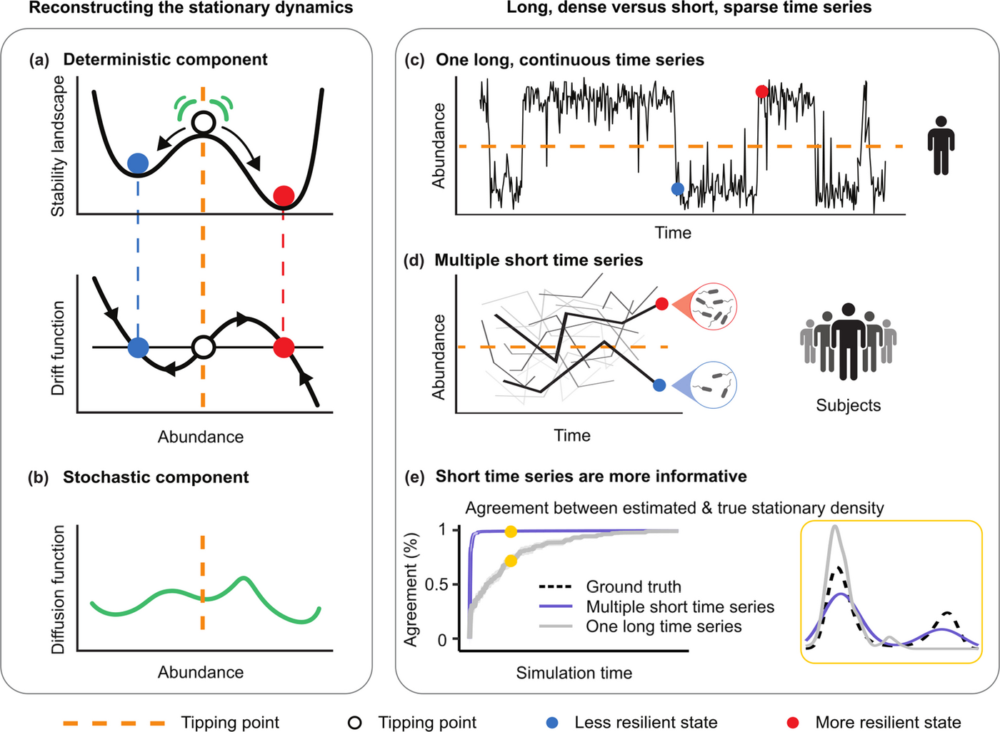
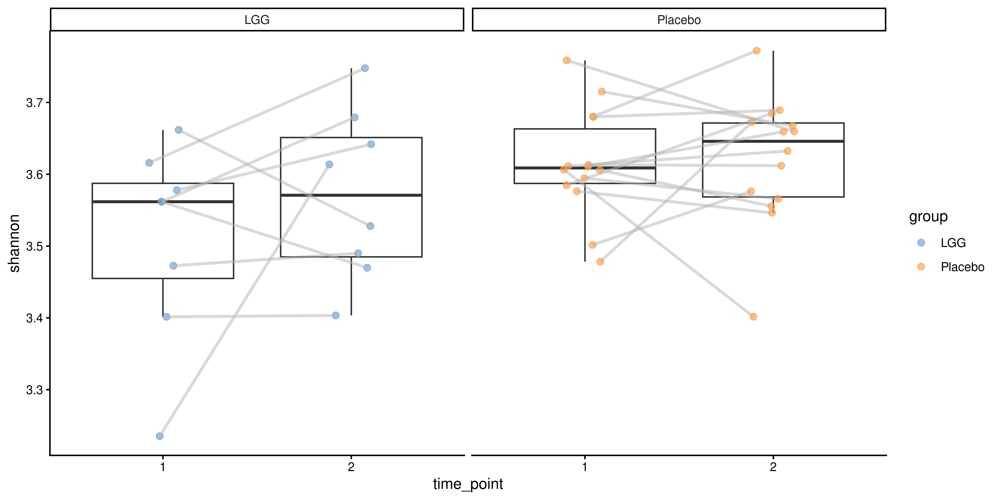
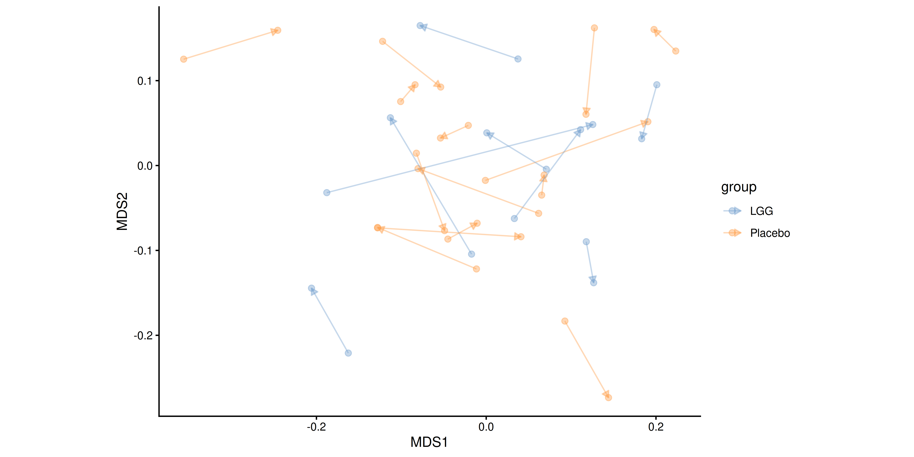
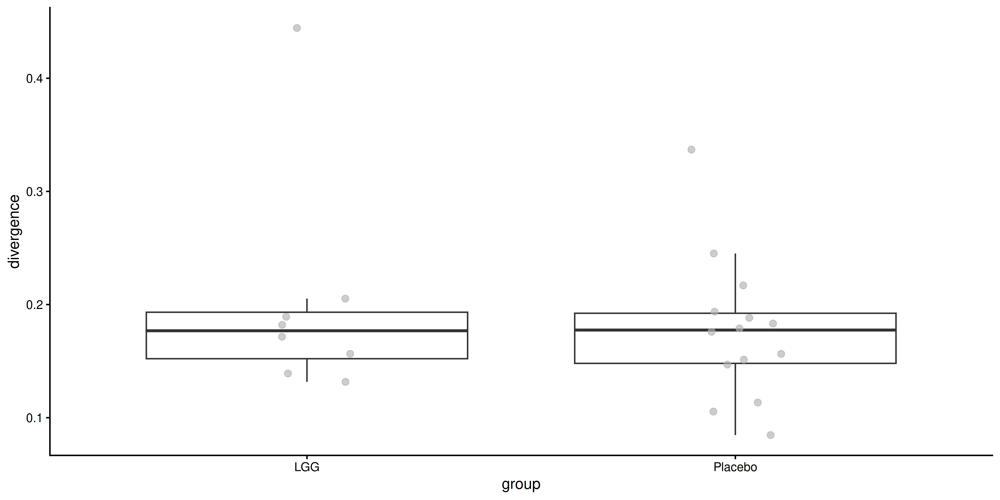

6 Time series analysis
Microbial communities are dynamic, constantly evolving over time. However, despite temporal fluctuations driven by environmental and other factors, the microbiome retains its core characteristics (Schmidt et al. 2018).
Cross-sectional studies capture the microbiome at a single time point. In contrast, longitudinal (temporal) study designs follow the same individuals over time. This allows researchers to study how microbial communities change, for example, in response to an intervention such as antibiotic or probiotic treatment, or during the progression of a disease.
Longitudinal data also help to interpret cross-sectional findings. A single sample reflects not only differences between individuals but also the natural day-to-day variability within each individual’s microbiome. By sampling the same subjects repeatedly, this within-subject variability can be estimated and separated from between-subject differences. This reduces the uncertainty in comparisons between groups.
Repeated sampling also reveals the dynamics of a community, such as whether a taxon has alternative stable states with a tipping point between them (Figure 6.1). Such dynamics can be reconstructed from one long time series, but many short time series from different subjects can be even more informative (Ross et al. 2026).

Analyzing longitudinal data includes aspects that need to be taken into account, such as the dependence between samples collected from the same subject.
Most of the methods introduced in OMA can be applied to longitudinal data with small modifications. This chapter shows how alpha diversity, beta diversity and differential abundance analyses can be applied to longitudinal data. The difference is that samples from the same subject are paired, and the analysis has to take this into account. For further methods, see the miaTime package.
In this chapter, we use the peerj32 data set (OMA data sets) from a probiotic/placebo intervention study. It includes gut microbiota samples from 22 subjects at 2 time points. The first time point was sampled before introducing a treatment.
6.1 Alpha diversity
OMA introduces alpha diversity. Here we calculate the Shannon index and visualize it by time point (Figure 6.2). Lines connect the samples of each subject.
library(miaViz)
tse <- addAlpha(tse, index = "shannon")
plotBoxplot(
tse,
col.var = "shannon",
x = "time_point",
pair.by = "subject",
colour.by = "group",
facet.by = "group"
)
The plot does not show a clear change in either group. Because the samples are paired, we use the paired Wilcoxon test separately for each group.
df <- colData(tse) |> as.data.frame()
df <- df[order(df[["subject"]]), ]
lapply(split(df, df[["group"]]), function(x) {
wilcox.test(
x[x[["time_point"]] == 1, "shannon"],
x[x[["time_point"]] == 2, "shannon"],
paired = TRUE
)
})
## $LGG
##
## Wilcoxon signed rank exact test
##
## data: x[x[["time_point"]] == 1, "shannon"] and x[x[["time_point"]] == 2, "shannon"]
## V = 11, p-value = 0.4
## alternative hypothesis: true location shift is not equal to 0
##
##
## $Placebo
##
## Wilcoxon signed rank exact test
##
## data: x[x[["time_point"]] == 1, "shannon"] and x[x[["time_point"]] == 2, "shannon"]
## V = 49, p-value = 0.9
## alternative hypothesis: true location shift is not equal to 0Neither group shows a significant change in Shannon diversity between the time points. The tests above do not compare the groups. A linear mixed model can test whether the change over time differs between the groups. The time * group term includes the effects of time and group and their interaction, and (1 | subject) adds a random effect for each subject to account for the repeated measurements.
library(lmerTest)
model <- lmer(shannon ~ time * group + (1 | subject), data = df)
summary(model)
## Linear mixed model fit by REML. t-tests use Satterthwaite's method [
## lmerModLmerTest]
## Formula: shannon ~ time * group + (1 | subject)
## Data: df
##
## REML criterion at convergence: -62.1
##
## Scaled residuals:
## Min 1Q Median 3Q Max
## -2.627 -0.486 0.038 0.494 1.486
##
## Random effects:
## Groups Name Variance Std.Dev.
## subject (Intercept) 0.00268 0.0518
## Residual 0.00746 0.0864
## Number of obs: 44, groups: subject, 22
##
## Fixed effects:
## Estimate Std. Error df t value Pr(>|t|)
## (Intercept) 3.4504 0.0707 27.3689 48.81 <2e-16 ***
## time 0.0606 0.0432 20.0000 1.40 0.176
## groupPlacebo 0.1595 0.0886 27.3689 1.80 0.083 .
## time:groupPlacebo -0.0551 0.0541 20.0000 -1.02 0.321
## ---
## Signif. codes: 0 '***' 0.001 '**' 0.01 '*' 0.05 '.' 0.1 ' ' 1
##
## Correlation of Fixed Effects:
## (Intr) time grpPlc
## time -0.916
## groupPlaceb -0.798 0.731
## tim:grpPlcb 0.731 -0.798 -0.916The interaction term “time:groupPlacebo” tests whether the change in Shannon diversity from the first to the second time point differs between the Placebo and LGG groups. The interaction is not significant, so the change in diversity does not differ between the groups.
6.2 Beta diversity
OMA introduces ordination. In longitudinal data, we can connect the samples of each subject in the ordination plot to show how the communities changed over time (Figure 6.3).
tse <- transformAssay(tse, method = "relabundance")
tse <- addMDS(tse, assay.type = "relabundance", method = "bray")
plotOrdination(
tse,
dimred = "MDS",
colour.by = "group",
pair.by = "subject",
sort.by = "time"
)
The arrows show no consistent shift that would separate the groups.
The change can also be quantified as the dissimilarity between consecutive samples of the same subject, i.e., divergence (see OMA). Figure 6.4 shows the divergence by intervention group.
library(miaTime)
tse <- addStepwiseDivergence(
tse,
time.col = "time",
group = "subject",
assay.type = "relabundance",
method = "bray"
)
plotBoxplot(
tse,
col.var = "divergence",
x = "group"
)
Divergence between the time points is similar in both groups.
6.3 Differential abundance
OMA introduces differential abundance analysis. With paired samples, the subject has to be included in the model. Below, we use LimROTS (Anwar et al. 2025) to test which taxa changed between the time points in the LGG group. The argument correlation_block specifies the subject, so that samples from the same subject are resampled together and their correlation is accounted for in the model. LimROTS requires log-transformed data, so we use the robust CLR (rclr) transformation.
library(LimROTS)
tse <- transformAssay(tse, method = "rclr")
tse_lgg <- tse[, tse[["group"]] == "LGG"]
set.seed(123)
tse_lgg <- LimROTS(
tse_lgg,
assay.type = "rclr",
niter = 200,
meta.info = c("time_point", "subject"),
group = "time_point",
formula.str = "~ 0 + time_point",
correlation_block = "subject",
verbose = FALSE
)
res <- rowData(tse_lgg)[, c("corrected.logfc", "pvalue", "qvalue")]
# Sort the results
res <- res[order(res[["pvalue"]]), ]
res |> head()
## DataFrame with 6 rows and 3 columns
## corrected.logfc pvalue qvalue
## <numeric> <numeric> <numeric>
## Desulfovibrio et rel. -0.381747 0.00873077 0.127019
## Proteus et rel. 0.355994 0.01319231 0.127019
## Bilophila et rel. -0.299021 0.01619231 0.127019
## Gemella -0.293682 0.01653846 0.127019
## Eggerthella lenta et rel. -0.302522 0.01692308 0.127019
## Aeromonas -0.282526 0.01748077 0.127019corrected.logfc is the first time point minus the second, so negative values mean higher abundance at the second time point. In the LGG group, Desulfovibrio et rel. increased after the intervention. However, the result is not significant which we can see from adjusted p-values (qvalue).
LimROTS compares the levels of one categorical variable. To test whether the change differs between the groups, use a model with an interaction term as in the alpha diversity example above.